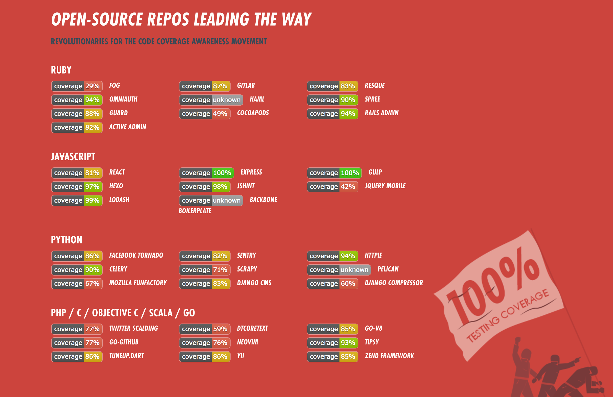

name: inverse <!--layout: true--> class: inverse --- class: center, middle # 单元测试简介 ### [unit test] --- # About Me ## VMware ### 3年Web（Python, JavaScript）开发 ### 1年虚拟化开发 ## 海马玩 ### 11个月Java开发 --- class: middle # Agenda 1. 什么是单元测试 2. 为什么要单元测试 3. 怎么做单元测试 4. TDD 测试驱动开发 --- class: center, middle # 什么是单元测试 --- ## 概念 > 维基百科： > 是针对程序模块（软件设计的最小单位）来进行正确性检验的测试工作。程序单元是应用的最小可测试部件。在过程化编程中，一个单元就是***单个程序、函数、过程***等；对于面向对象编程，最小单元就是***方法***，包括基类（超类）、抽象类、或者派生类（子类）中的方法。 --- class: center, middle # 为什么要单元测试 --- ### 最近几年开源软件都在追求代码覆盖率  --- ## 题外话：拒绝货柜崇拜 第二次世界大战太平洋战争时，美军于塔纳岛建立一临时基地。当时岛上的原住民看见美军于“大铁船”（军舰）内出来，皆觉得十分惊讶；他们也看到，有一些“大铁鸟”（军用飞机）运送穿着美军军服的人及许多物资。这些原住民看见这种情况均感到很惊讶，并觉得这些“大铁船”及“大铁鸟”十分厉害。加上美军也提供部分物资给原住民，而这些物资对原住民来说十分有用，结果这些原住民将美军当作神。 第二次世界大战结束后，美军离开塔纳岛，只留下一些美军军服及一些货物。塔纳岛原住民便认为这些货物具有神奇力量，又相信“神”（美军）他日会回来并带来更多货物，使他们展开一个幸福新时代。但是美军当然再也没有回来塔纳岛，因此这些原住民便自己发展出一套敬拜仪式，崇拜美军军服及货物；***表现形式是原住民会穿着美军军服、升起美国国旗，***图腾则是木刻的飞机。 --- class: center, middle ## 他们这么做的原因是？ --- class: center, middle ### 低成本验证代码实现是否符合预期 #### 减少bug，防止regression --- class: center, middle ### 方便自动化，为持续集成提供基础 --- class: center, middle ### 相当于代码的文档 --- class: center, middle ### 给了我们 ***随意*** 重构代码的勇气 --- class: center, middle 如果你希望自己的软件灵活可变，那就应该时常修改它； 该在什么时候做这些修改呢？随时！关注哪个模块，就对它做点简单的修改来改进结构。每次通读代码的时候，也可以不时调整一下结构。 --- class: center, middle 这完全与大多数人对软件的理解相反。 他们认为对上线运行的软件不断地做修改是危险的。 ***错！*** 让软件保持固定不变才是危险的！ 如果一直不重构代码，等到最后不得不重构时，你就会发现代码已经“僵化了”。 --- class: middle 为什么大多数开发人员不敢经常修改他的代码呢？因为他们害怕会改坏代码！为什么会有这样的担心呢？因为他们没有做测试. 话题又回到测试上来了。***如果你有一套覆盖了全部代码的自动化测试，如果那套测试可以随时快速执行，那么你根本不会害怕修改代码。*** --- class: middle 看到糟糕代码的时候，你为什么不修改？看到混乱的函数的时候，你的第一反应是：“真实一团糟，这个函数需要整理。” 你的第二反应是：“我不会去碰它！”为什么？因为你知道，如果去动它，就要冒着破坏它的风险；而如果你破坏了它，那么它就缠上你了。 --- class: middle 拥有一套***值得信赖的测试***，便可完全打消对修改代码的全部恐惧，当看见糟糕代码的时候，就可以放手整理，代码变得具有可塑性。 当程序员不再惧怕整理代码时，他们便会动手整理！整洁的代码更易于理解，更易于修改，也更易于扩展。代码简洁了，缺陷也更少了。 --- class: center, middle # 怎么做单元测试 --- class: center, middle ## Arrange 安排 ## Act 干！ ## Assert 检查 --- ```java public class Math { int a, b; Math(int a, int b) { this.a = a; this.b = b; } public int add() { return a + b; } } ``` ```java import org.junit.Assert; import org.junit.Before; import org.junit.Test; public class MathTest { Math math; @Before public void setUp() throws Exception { math = new Math(7, 10); // <----------- Arrange } @Test public void testAdd() { Assert.assertEquals(17, math.add()); // <----------- Act & Assert } } ``` --- class: center, middle ## 要测试各种情况 http://172.16.2.73:8081/#/c/9273/1 --- class: middle ## 想不全怎么办？ 首先：尽量想； 其次：No one is perfect，等出问题了，补上对应的情况即可。 --- class: center, middle ### 我的code要用数据库/Redis/另一个服务怎么办？ # Mock --- ## 使用JMockit来mock外界依赖 ```java public class ExampleTest { @Tested ServiceAbc tested; @Injectable DependencyXyz mockXyz; @Test public void doOperationAbc(@Mocked AnotherDependency anyInstance) { new Expectations() {{ anyInstance.doSomething(anyString); result = 123; AnotherDependency.someStaticMethod(); result = new IOException(); }}; tested.doOperationAbc("some data"); new Verifications() {{ mockXyz.complexOperation(true, anyInt, null); times = 1; }}; } } ``` <!--instanceServiceTest2--> --- class: center, middle ## 其他mock的小技巧 --- ***我想测private方法怎么办？*** ```java Method method = CommonDataJob.class.getDeclaredMethod("parseTableFilterCondition", String.class); method.setAccessible(true); List<String> r1 = (List<String>) method.invoke(commonDataJob, "all"); Assert.assertEquals(r1.size(), 0); ``` --- ***有个超复杂的private方法，我好不容易测好了。测它的调用者的时候，我想mock掉它，怎么办？*** ```java public class CommonDataJobTest { @Tested(fullyInitialized = true) private CommonDataJob commonDataJob; @Test public void executeTest1(@Mocked JobExecutionContext jobExecutionContext) throws JobExecutionException { new MockUp<CommonDataJob> () { @Mock void syncDataComplexMode(List<InterfaceDo> dos) {} }; new Expectations() {{ jobExecutionContext.getJobDetail(); JobDetail jobDetail = new JobDetailImpl(); JobDataMap jobDataMap = jobDetail.getJobDataMap(); jobDataMap.put("filterMode", JobFactory.JobMode.COMPLEX.getValue()); result = jobDetail; times = 1; }}; commonDataJob.execute(jobExecutionContext); } } ``` --- ***如何验证方法调用的参数*** ```java @Test public void parseNodeFilterConditionTest2() throws NoSuchMethodException, InvocationTargetException, IllegalAccessException { new Expectations() {{ interfaceDoMapper.selectByExample((InterfaceDoExample) any); result = Arrays.asList(new InterfaceDo(), new InterfaceDo()); times = 1; }}; Method method = CommonDataJob.class.getDeclaredMethod("parseNodeFilterCondition", String.class); method.setAccessible(true); List<InterfaceDo> r1 = (List<InterfaceDo>) method.invoke(commonDataJob, "enabled"); Assert.assertEquals(r1.size(), 2); new Verifications() {{ InterfaceDoExample interfaceDoExample; interfaceDoMapper.selectByExample(interfaceDoExample = withCapture()); // verify interfaceDoExample, e.g. Assert }}; } ``` --- class: middle ## mock/simulate一个服务: [Hoverfly](https://docs.hoverfly.io/en/latest/) ### [Simulate](http://hoverfly.readthedocs.io/projects/hoverfly-java/en/latest/pages/corefunctionality/simulating.html) http://172.16.2.73:8081/#/c/9341/ ### [Capture](http://hoverfly.readthedocs.io/projects/hoverfly-java/en/latest/pages/corefunctionality/capturing.html) --- class: center, middle ## 没错，几乎工程中的所有角落都可以测到 ## :) --- class: center, middle ## 但是 # 请编写易于测试的产品代码 --- class: center, middle ***No Zuo No Die, Why You Try***  --- class: center, middle ## 5000 >> 100 * 50 --- class: center, middle # TDD 测试驱动开发 ## 进攻是最好的防御 --- ## 三准则 #### 1. 在编写失败的单元测试之前，不要编写任何产品代码。 #### 2. 只要有一个能***失败***的单元测试，就不要再写测试代码；编译不通过也算。 #### 3. 产品代码恰好能够让当前的单元测试成功通过即可，不要多写。 ***遵循这三项准则的话，大概每30s就要运行一次代码*** --- class: center, middle ## 先写实现后测试是防御 --- class: center, middle ## 先写测试后写实现是进攻 --- class: middle ## 听说TDD已经不流行了，TDD已死？ #### TDD不是银弹，不可能适合所有的场景，但这不应该成为我们拒绝它的理由。 #### 也不要轻易否定TDD，如果要否定，起码要在认真实践过之后。 --- class: center, middle # 理想与现实 --- class: center, middle ## 有人说 # “互联网公司都这样......” --- class: center, middle ### “做人如果没有梦想，和咸鱼有什么区别”  --- class: center, middle # 谢谢大家 # 周末愉快 # :)